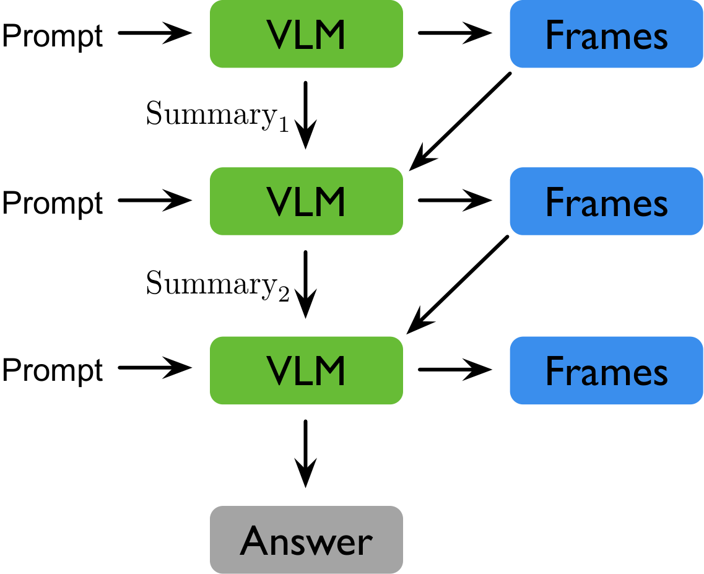
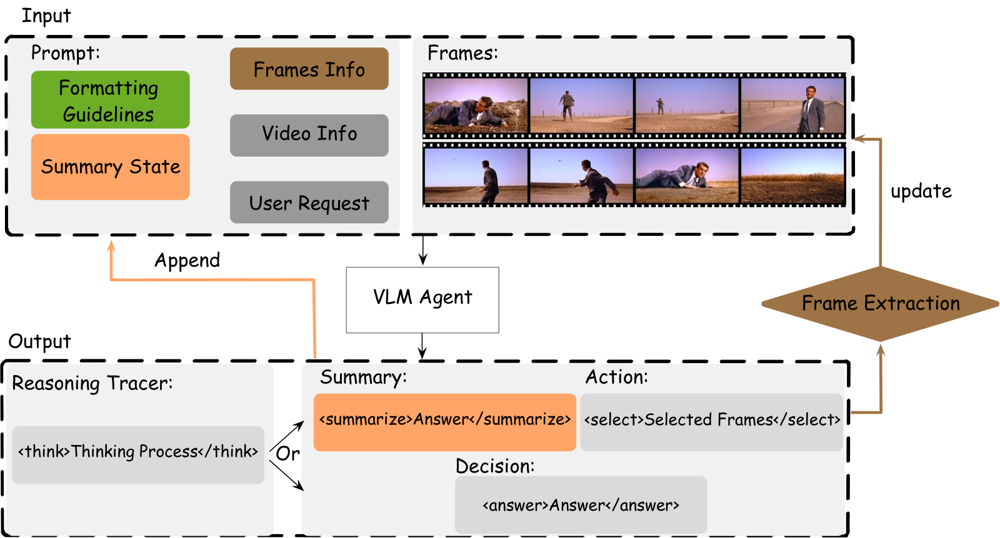
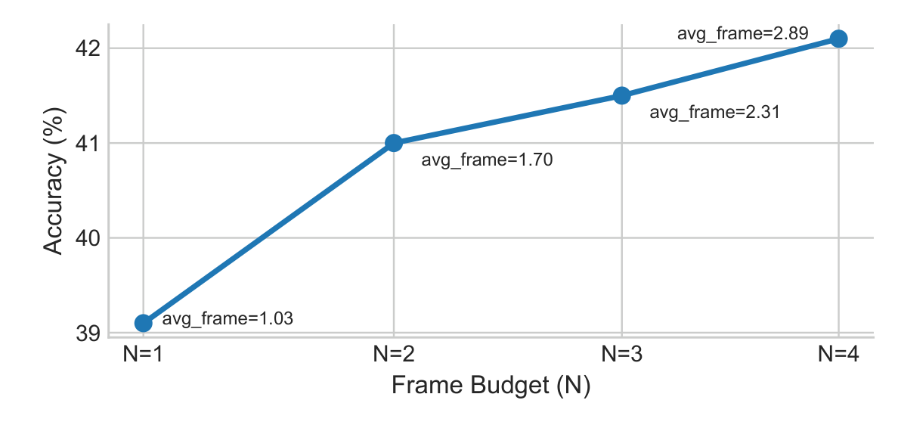

ReViSe — Reasoning with Video Sparsity
We present ReViSe (Reasoning with Video Sparsity), a multi-round agent for video question answering (VQA). Instead of uniformly sampling frames, ReViSe selects a small set of informative frames, maintains a summary-as-state across rounds, and stops early when confident. It supports proprietary vision-language models (VLMs) in a “plug-and-play” setting and enables reinforcement fine-tuning for open-source models. For fine-tuning, we introduce EAGER (Evidence-Adjusted Gain for Efficient Reasoning), an annotation-free reward with three terms: (1) Confidence gain: after new frames are added, we reward the increase in the log-odds gap between the correct option and the strongest alternative; (2) Summary sufficiency: at answer time we re-ask using only the last committed summary and reward success; (3) Correct-and-early stop: answering correctly within a small turn budget is rewarded. Across multiple VQA benchmarks, ReViSe improves accuracy while reducing frames, rounds, and prompt tokens, demonstrating practical sparse video reasoning.
ReViSe operates analogously to a recurrent neural network: it maintains a compact state that propagates information from previous rounds to the VLM, without re-admitting raw frames or conversation history. This is the load-bearing design choice that keeps the context compact even as evidence accumulates.

Each round, the agent receives sampled video frames, the question, and its current summary state. It produces a structured summary using the POHR format:
| P Previously seen | What frames have been inspected so far |
| O Observations | What was just observed in the current frames |
| H Hypotheses | How observations update the current belief |
| U Uncertainties | What remains unclear |
| R Reasons | Why specific new frames are needed, or why the question is now answerable |
The agent then either requests more frames (<frames>) or produces a
final answer (<answer>). Only the summary persists between rounds —
not raw frames or conversation history — keeping the context compact.

The ReViSe agent loop: sample frames → update the POHR summary → request targeted frames or commit an answer.
Wraps any VLM — including proprietary APIs like GPT-4o — as a frozen black box. No parameter updates needed.
GRPO with the EAGER reward, combining three annotation-free terms:
A real ReViSe rollout on NExT-QA — step through the rounds to watch the agent gather evidence, update its summary, and stop once it is confident. Frames are the actual ones the agent selected each round.
| Benchmark | Model | Accuracy | Avg. Frames |
|---|---|---|---|
| VideoEspresso | GPT-4o + ReViSe | 48.9% | 8.0 |
| NExT-QA | GPT-4o + ReViSe | 63.8% | 8.4 |
| EgoSchema | GPT-4o + ReViSe | 60.6% | 9.8 |
| NExT-QA | Qwen2.5-VL-3B + ReViSe + RL | 51.3% | 3.9 |
RL fine-tuning yields +19.6pp accuracy over plug-and-play on NExT-QA while using fewer frames, fewer rounds, and nearly 2× faster inference.

More rounds yield better accuracy at lower average frame budgets — the agent learns to stop early when confident.
@inproceedings{xu2026revise,
title = {Towards Sparse Video Understanding and Reasoning},
author = {Xu, Chenwei and Ye, Zhen and Wu, Shang and Li, Weijian and
Wang, Zihan and Xia, Zhuofan and Lu, Lie and Maneriker, Pranav and
Du, Fan and Li, Manling and Liu, Han},
booktitle = {Proceedings of the IEEE/CVF Conference on Computer Vision and Pattern Recognition (CVPR)},
year = {2026}
}
A walkthrough of the method, the summary-as-state loop, and the EAGER reward.